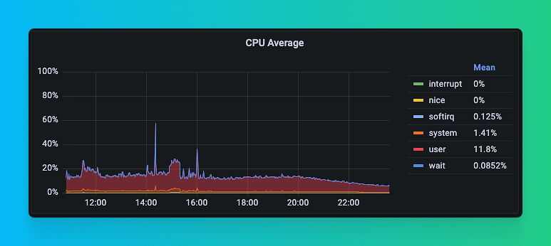
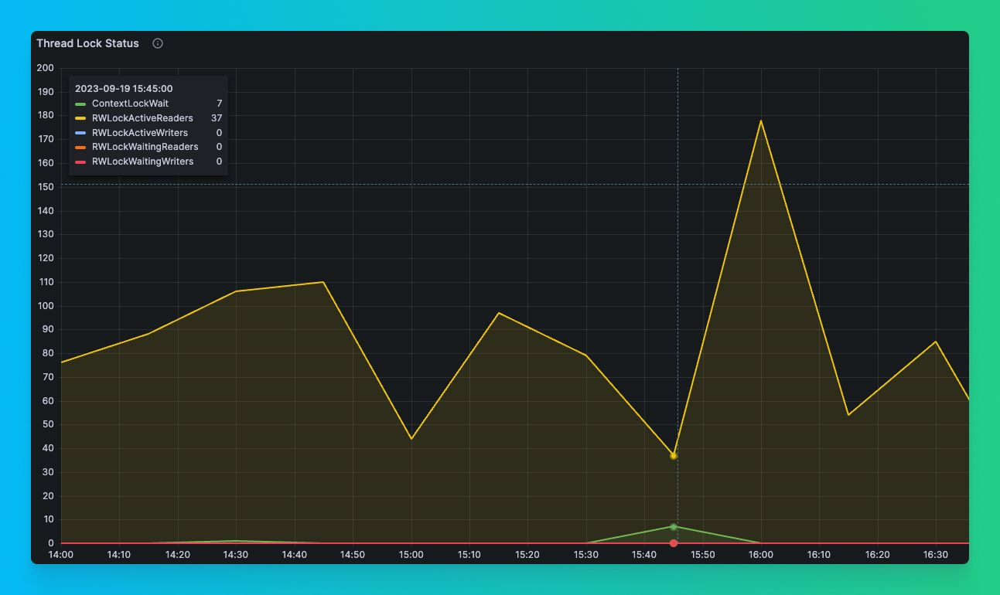
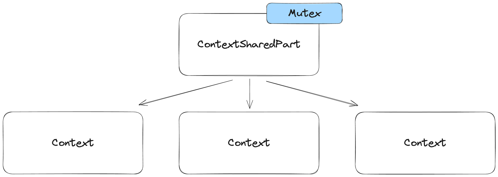
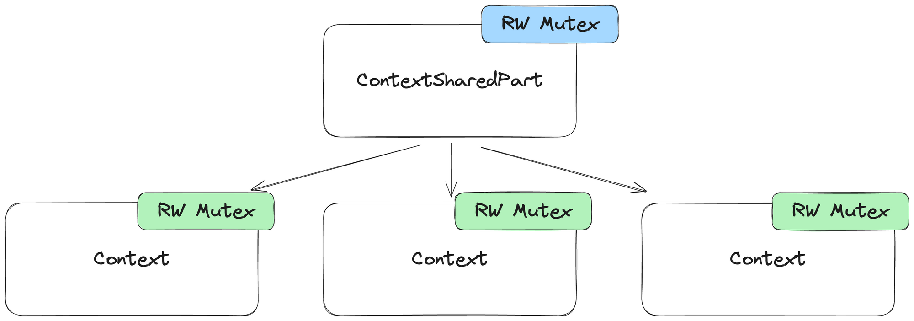
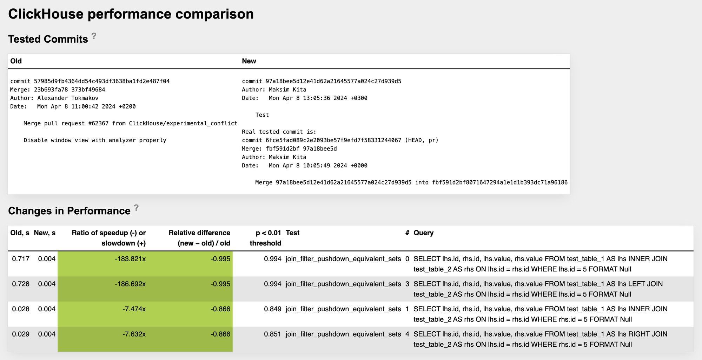
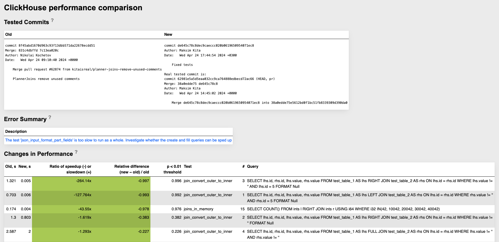
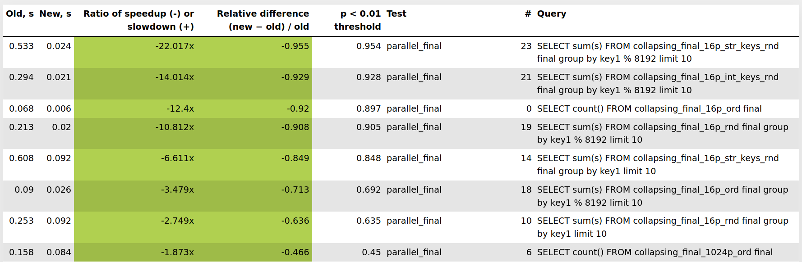
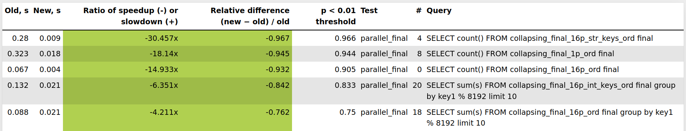

Maksim, database management systems developer.
1. Concurrency.
2. High-level optimizations.
3. Low-level optimizations.
4. Algorithms.
CPU underutilization in one of Tinybird biggest clusters.

After 1 year during similar indicent we spot that ContextLockWait async profile event periodically increased ...

During indident we periodically dumped all stack traces to understand if all threads are blocked on lock inside Context using system.stack_trace.
WITH arrayMap(x -> demangle(addressToSymbol(x)), trace) AS all
SELECT thread_name, thread_id, query_id, arrayStringConcat(all, '\n') AS res
FROM system.stack_trace LIMIT 1 FORMAT Vertical;
Row 1:
──────
thread_name: clickhouse-serv
thread_id: 125441
query_id:
res: pthread_cond_wait
std::__1::condition_variable::wait(std::__1::unique_lock&)
BaseDaemon::waitForTerminationRequest()
DB::Server::main(/*arguments*/)
Poco::Util::Application::run()
DB::Server::run()
Poco::Util::ServerApplication::run(int, char**)
mainEntryClickHouseServer(int, char**)
main
__libc_start_main
_start
Per query profile events:
...
M(GlobalThreadPoolJobs,
"Counts the number of jobs that have been pushed to the global thread pool.",
ValueType::Number) \
M(GlobalThreadPoolLockWaitMicroseconds,
"Total time threads have spent waiting for locks in the global thread pool.",
ValueType::Microseconds) \
M(GlobalThreadPoolJobWaitTimeMicroseconds,
"Measures the elapsed time from when a job is scheduled in the thread pool to when it is picked up
for execution by a worker thread. This metric helps identify delays in job processing, indicating
the responsiveness of the thread pool to new tasks.",
ValueType::Microseconds) \
M(LocalThreadPoolLockWaitMicroseconds,
"Total time threads have spent waiting for locks in the local thread pools.",
ValueType::Microseconds) \
...
We added ContextLockWaitMicroseconds event to ProfileEvents in pull request.
...
M(ContextLock,
"Number of times the lock of Context was acquired or tried to acquire. This is global lock.",
ValueType::Number) \
M(ContextLockWaitMicroseconds,
"Context lock wait time in microseconds",
ValueType::Microseconds) \
...
Example query:
SELECT UserID, count(*) FROM (SELECT * FROM hits_clickbench LIMIT 10) GROUP BY UserID
0 rows in set. Elapsed: 0.005 sec.
Run benchmark:
clickhouse-benchmark --query="SELECT UserID, count(*) FROM (SELECT * FROM hits_clickbench LIMIT 10)
GROUP BY UserID" --concurrency=200
Check results:
SELECT quantileExact(0.5)(lock_wait_milliseconds), max(lock_wait_milliseconds) FROM
(
SELECT (ProfileEvents['ContextLockWaitMicroseconds'] / 1000.0) AS lock_wait_milliseconds
FROM system.query_log WHERE lock_wait_milliseconds > 0
)
┌─quantileExact(0.5)(lock_wait_milliseconds)─┬─max(lock_wait_milliseconds)─┐
│ 17.452 │ 382.326 │
└────────────────────────────────────────────┴─────────────────────────────┘

ContextSharedPart is responsible for storing and providing access to global shared objects that are shared between all sessions and queries, for example: Thread pools, Server paths, Global trackers, Clusters information.
Context is responsible for storing and providing access to query or session-specific objects, for example: query settings, query caches, query current database.
During query execution, ClickHouse can create a lot of Contexts because each subquery in ClickHouse can have unique settings. For example:
SELECT id, value
FROM (
SELECT id, value
FROM test_table
SETTINGS max_threads = 16
)
WHERE id > 10
SETTINGS max_threads = 32
A large number of low-latency, concurrent queries with many subqueries will create a lot of Contexts per query, and the problem becomes even bigger.
The problem was that a single mutex was used for most of the synchronization between Context and ContextSharedPart, even when we worked with objects local to Context.
We did a big refactoring, replacing a single global mutex with two read-write mutexes. One global read-write mutex for ContextSharedPart and one local read-write mutex for each Context.
We used read-write mutexes because most of the time we do a lot of concurrent reads (for example read settings or some path) and rarely concurrent writes.
In many places, we completely got rid of synchronization where it was used for initialization and used call_once for objects that are initialized only once.

ContextSharedPart and Context both contain a lot of fields and it is very hard to properly split synchronization between them manually.
We added clang Thread Safety Analysis annotations to all fields https://clang.llvm.org/docs/ThreadSafetyAnalysis.html
clang -c -Wthread-safety example.cpp
Benchmark:
clickhouse benchmark -r --ignore-error \
--concurrency=500 \
--timelimit 600 \
--connect_timeout=20 < queries.txt
Results:
Before ~200 QPS. After ~600 QPS (~3x better).
Before CPU utilization of only ~20%. After ~60% (~3x better).
Before median query time 1s. After ~0.6s (~2x better).
Before slowest queries took ~75s. After ~6s (~12x better).
We also were able to fully utilize ClickHouse instance with --concurrency=1000.
Results:
~1,000 QPS
~95-96% CPU utilization
More information about this optimization can be found in our blog Resolving a year-long ClickHouse lock contention.
In ClickHouse, as in most other SQL databases, query execution is divided into multiple stages:
1. Query parsing.
2. Query analysis.
3. Build and optimize a logical query plan.
4. Build and optimize a physical query plan.
5. Execute physical query plan.
One of the most important places for high level optimizations is Query Plan optimization logic.
Let's take a look at the following query plan:
EXPLAIN
SELECT * FROM test_table_1 AS lhs
INNER JOIN test_table_2 AS rhs ON lhs.id = rhs.id
WHERE test_table_1.id = 5
SETTINGS optimize_move_to_prewhere = 0
┌─explain──────────────────────────────────────────────────────────────────────┐
│ Expression ((Project names + (Projection + ))) │
│ Join (JOIN FillRightFirst) │
│ Filter (( + (JOIN actions + Change column names to column identifiers))) │
│ ReadFromMergeTree (default.test_table_1) │
│ Expression ((JOIN actions + Change column names to column identifiers)) │
│ ReadFromMergeTree (default.test_table_2) │
└──────────────────────────────────────────────────────────────────────────────┘
Problem was that simple version of predicate pushdown optimization was used for JOINs.
It did not consider equivalence classes of JOINed columns (that is, equivalent columns after the JOIN is performed).
In pull request, we introduced a more complex analysis of predicates that uses equivalence classes and can transform predicates that are applied to one side of JOIN to predicates that can be applied to another side of JOIN.
In addition, the predicate will be split into different parts and only safe parts will be pushed down, if necessary.
Let's take a look at query plan of the same query as before after the optimization:
EXPLAIN
SELECT * FROM test_table_1 AS lhs
INNER JOIN test_table_2 AS rhs ON lhs.id = rhs.id
WHERE test_table_1.id = 5
SETTINGS optimize_move_to_prewhere = 0
┌─explain──────────────────────────────────────────────────────────────────────┐
│ Expression ((Project names + (Projection + ))) │
│ Join (JOIN FillRightFirst) │
│ Filter (( + (JOIN actions + Change column names to column identifiers))) │
│ ReadFromMergeTree (default.test_table_1) │
│ Filter (( + (JOIN actions + Change column names to column identifiers))) │
│ ReadFromMergeTree (default.test_table_2) │
└──────────────────────────────────────────────────────────────────────────────┘
Now, the predicate is pushed to both the LEFT and RIGHT sides of the JOIN.
Performance improvement is potentially infinite, easily up to 100x-200x. Here is performance tests results from CI:

In pull request, we introduced another optimization that allows ClickHouse to automatically convert an OUTER JOIN to an INNER JOIN if the predicate after JOIN filters all non-joined rows with default values.
This technique allows for additional optimization opportunities because after the JOIN is converted from OUTER to INNER, we can apply predicate pushdown in more scenarios.
Let's take a look at the following query plan before the optimization:
EXPLAIN actions = 1
SELECT * FROM test_table_1 AS lhs
LEFT JOIN test_table_2 AS rhs ON lhs.id = rhs.id
WHERE test_table_2.id = 5
┌─explain─────────────────────────────────────────────┐
│ Expression ((Project names + Projection)) │
│ Filter ((WHERE + DROP unused columns after JOIN)) │
│ Join (JOIN FillRightFirst) │
│ Type: LEFT │
│ Strictness: ALL │
│ Algorithm: HashJoin │
│ Clauses: [(__table1.id) = (__table2.id)] │
│ ... │
└─────────────────────────────────────────────────────┘
After optimization, the query plan is:
EXPLAIN actions = 1
SELECT * FROM test_table_1 AS lhs
LEFT JOIN test_table_2 AS rhs ON lhs.id = rhs.id
WHERE test_table_2.id = 5
┌─explain────────────────────────────────────────┐
│ Expression ((Project names + (Projection + ))) │
│ Join (JOIN FillRightFirst) │
│ Type: INNER │
│ Strictness: ALL │
│ Algorithm: HashJoin │
│ Clauses: [(__table1.id) = (__table2.id)] │
│ ... │
└────────────────────────────────────────────────┘
Performance improvement is potentially infinite, easily up to 100x-200x. Here is performance tests results from CI:

In general all such query plan optimizations work great with each other, so when one optimization is added it can improve performance of a huge range of queries not only by itself, but also with combination with other optimizations.
OUTER to INNER JOIN conversion -> more possibilities for JOIN predicate pushdown
More information about this optimizations can be found in our blog ClickHouse JOINs... 100x faster.
In December 2023, during the development of some ClickHouse features, when I ran some queries that read a lot of String columns,
I noticed in the perf-top and flame graphs that we can spend around 20-40% of query execution time on strings deserialization.
I knew that string deserialization place was already heavily optimized in ClickHouse, but I decided to dig deeper.
In perf-top, I saw something like this:
Samples: 1M of event 'cycles', 4000 Hz, Event count (approx.): 756969039682 lost: 0/0 drop: 0/17041
Overhead Shared Object Symbol
39.00% clickhouse [.] DB::deserializeBinarySSE2<1>
15.12% clickhouse [.] DB::PODArrayBase<1ul, 4096ul>::resize<>
13.57% clickhouse [.] DB::PODArrayDetails::byte_size
9.36% clickhouse [.] LZ4::(anonymous namespace)::decompressImpl<16ul, true>
4.36% [kernel] [k] copy_user_generic_string
2.60% clickhouse [.] DB::FunctionStringOrArrayToT::executeImpl
2.55% clickhouse [.] CityHash_v1_0_2::CityHash128WithSeed
2.31% clickhouse [.] LZ4::(anonymous namespace)::decompressImpl<16ul, false>
1.40% clickhouse [.] memcpy
1.15% clickhouse [.] DB::findExtremeImplAVX2
0.52% [kernel] [k] filemap_get_read_batch
0.52% clickhouse [.] LZ4::(anonymous namespace)::decompressImpl<8ul, true>
0.40% clickhouse [.] LZ4::(anonymous namespace)::decompressImpl<32ul, false>
Most of the time is spent in DB::deserializeBinarySSE2, and it is expected. What is not expected that we see PODArray::resize and PODArray::byte_size methods. If you check the DB::deserializeBinarySSE2 assembly, you can notice that the PODArray::resize function is called from it, and that function call is not inlined.
...
0.32 │ │ inc %r13
1.25 │ │ mov %r13,(%rax)
5.19 │ │ add $0x8,%rax
0.02 │ │ mov %rax,0x8(%rbp)
0.23 │ │ mov 0x30(%rsp),%r12
0.36 │ │ mov %r12,%rdi
0.14 │ │ mov %r13,%rsi
2.67 │ │→ callq DB::PODArrayBase<1ul, 4096ul, Allocator<false, false>, 63ul, 64ul>::resize<>
2.95 │ │ mov 0x28(%rsp),%rdx
1.70 │ │ test %rdx,%rdx
1.51 │ │↑ je 51
0.00 │ │ lea 0x11(%r15),%rax
...
If we check the PODArray::resize assembly, we will notice it calls PODArray::byte_size function and we can also see that PODArray::resize function call overhead is high.
...
0.10 │104: mov $0x1,%esi
0.71 │ mov %r14,%rdi
5.92 │ → callq DB::PODArrayDetails::byte_size
5.63 │ add %r12,%rax
0.10 │ mov %rax,0x8(%rbx)
30.30 │ pop %rbx
0.76 │ pop %r12
1.96 │ pop %r13
4.42 │ pop %r14
2.89 │ pop %r15
11.24 │ ← retq
...
In C++ code deserializeBinarySSE2 function looked like this:
void deserializeBinarySSE2(ColumnString::Chars & data, ColumnString::Offsets & offsets, ReadBuffer & istr, size_t limit)
{
size_t offset = data.size();
for (size_t i = 0; i < limit; ++i)
{
if (istr.eof())
break;
UInt64 size;
readVarUInt(size, istr);
...
data.resize(offset);
if (size)
{
#ifdef __SSE2__
/// An optimistic branch in which more efficient copying is possible.
if (offset + 16 * UNROLL_TIMES <= data.capacity() &&
istr.position() + size + 16 * UNROLL_TIMES <= istr.buffer().end())
{
...
}
else
#endif
{
istr.readStrict(reinterpret_cast<char*>(&data[offset - size - 1]), size);
}
}
data[offset - 1] = 0;
}
}
In this specific function, we work with PODArray as just a characters buffer, and we can manually control the resize process and resize buffer with some constant resize factor, for example, 2.
We also use the resize_exact function to reduce memory allocation size. So inside the deserialization loop, we replace:
data.resize(offset);
with:
if (unlikely(offset > data.size()))
data.resize_exact(roundUpToPowerOfTwoOrZero(std::max(offset, data.size() * 2)));
As a result, we have such performance improvement for a query that I used for the optimization test. Around 20% improvement.
Before:
SELECT max(length(value)) FROM test_table FORMAT Null
0 rows in set. Elapsed: 0.855 sec. Processed 1.50 billion rows, 19.89 GB
(1.75 billion rows/s., 23.27 GB/s.)
Peak memory usage: 1.24 MiB.
After:
SELECT max(length(value)) FROM test_table FORMAT Null
0 rows in set. Elapsed: 0.691 sec. Processed 1.50 billion rows, 19.89 GB
(2.17 billion rows/s., 28.79 GB/s.)
Peak memory usage: 1.17 MiB.
Results of performance tests from ClickHouse CI:
| Query | Old (s) | New (s) | Ratio of speedup(-) or slowdown(+) | Relative difference (new - old) / old |
|---|---|---|---|---|
| SELECT count() FROM empty_strings WHERE NOT ignore(s) | 0.449 | 0.27 | -1.662x | -0.399 |
| select anyHeavy(OpenstatSourceID) from hits_100m_single where OpenstatSourceID != '' group by intHash32(UserID) % 1000000 FORMAT Null | 0.088 | 0.066 | -1.328x | -0.247 |
| select anyHeavy(OpenstatCampaignID) from hits_100m_single where OpenstatCampaignID != '' group by intHash32(UserID) % 1000000 FORMAT Null | 0.088 | 0.066 | -1.32x | -0.243 |
| SELECT count() FROM hits_100m_single WHERE NOT ignore(format('{}Hello{}', MobilePhoneModel, PageCharset)) | 0.321 | 0.28 | -1.147x | -0.129 |
| SELECT str FROM test_full_10 FORMAT Null | 0.074 | 0.058 | -1.282x | -0.22 |
| SELECT count() FROM hits_100m_single WHERE NOT ignore(substring(PageCharset, 1, 2)) | 0.135 | 0.116 | -1.16x | -0.138 |
As a result, this optimization improved performance for queries that spend a lot of execution time on string deserialization by 10-20% on average.
For some queries, even for 60%.
There is no silver bullet, or best algorithm for any task.
Try to choose the fastest possible algorithm/algorithms for your specific task.
Performance must be evaluated on real data.
Most of the algorithms are affected by data distribution.
MergeTree is default ClickHouse table engine, stores sorted columns data in parts that are periodically merged.
Data is sorted by PRIMARY KEY.
Primary key sparse index is used to improve performance of SELECT queries.
Additionally allows to partition data by PARTITION KEY.
Simillar to LSM tree, but simpler. For example DELETEs, UPDATEs are not supported without data rewrite.
MergeTree is actually a family of table engines. There are ReplacingMergeTree, AggregatingMergeTree, SummingMergeTree, etc.
Each engine provides special logic that is applied to data during merge process.
Allows to perform deduplication, UPDATEs, aggregation, summation.
FINAL can be specified to apply this special logic during SELECT query after reading data from table.
SELECT * FROM table FINAL;
Let's create a ReplacingMergeTree table and insert some data:
CREATE TABLE test_table (id UInt64, value String)
ENGINE=ReplacingMergeTree ORDER BY id;
INSERT INTO test_table VALUES (0, 'Value_initial');
INSERT INTO test_table VALUES (0, 'Value_updated');
Without FINAL:
SELECT id, value FROM test_table;
┌─id─┬─value─────────┐
│ 0 │ Value_updated │
│ 0 │ Value_initial │
└────┴───────────────┘
With FINAL:
SELECT * FROM test_table FINAL;
┌─id─┬─value─────────┐
│ 0 │ Value_updated │
└────┴───────────────┘
Problem was that during SELECT query we need to read all requested data from table, apply FINAL logic to all this data before returning result from reading stage.
Applying FINAL logic to a lot of data is very slow, because of huge decrease in parallelization of reading stage.
Special FINAL logic can be very CPU intensive and additional data copying is required, logic is very simillar to Merge stage of MergeSort algorithm.
In pull request, we added optimization to skip FINAL logic between partitions if MergeTree PARTITION KEY contains columns from PRIMARY KEY.
Example table:
CREATE TABLE test_table_partitioned (id UInt64, value String)
ENGINE=ReplacingMergeTree
ORDER BY id
PARTITION BY id % 10;
Performance improvement is potentially infinite, easily up to 20x-30x. Here is performance tests results from CI:

In another pull request we introduced optimization that adds PRIMARY KEY ranges analysis to apply FINAL only to those ranges where PRIMARY KEY intersects and skip for all other ranges.
Implementation is very simillar to Sweep line algorithm, with additional ClickHouse specific implementation details.
In case when amount of duplicate values with same primary key is low, performance will be almost the same as without FINAL.
Performance improvement is potentially infinite, easily up to 20x-30x. Here is performance tests results from CI:

Sometimes, you can achieve significant performance improvement not only by using some high-level complex optimizations but also by using better algorithms and data structures for your specific tasks or by small source code level optimizations.
Blog post https://maksimkita.com/blog/power-of-small-optimizations.html